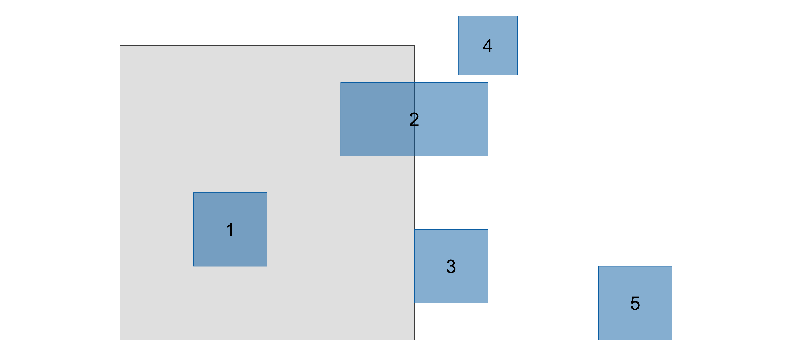
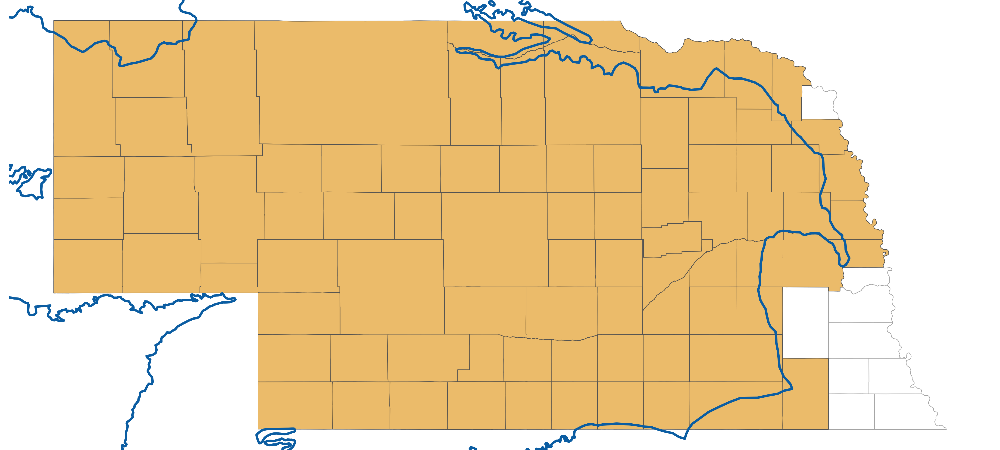
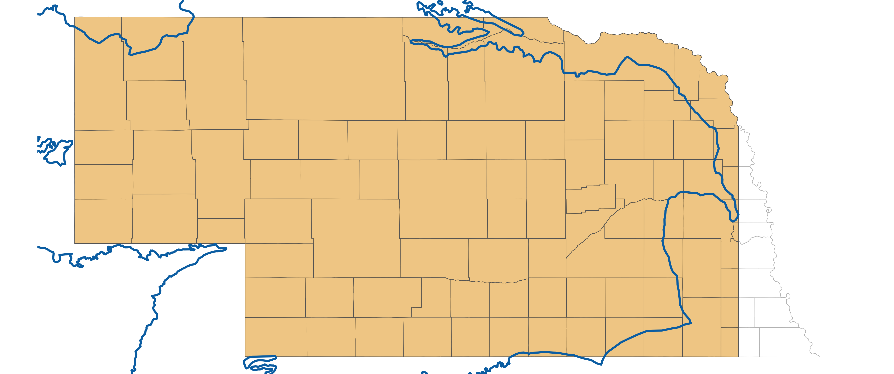
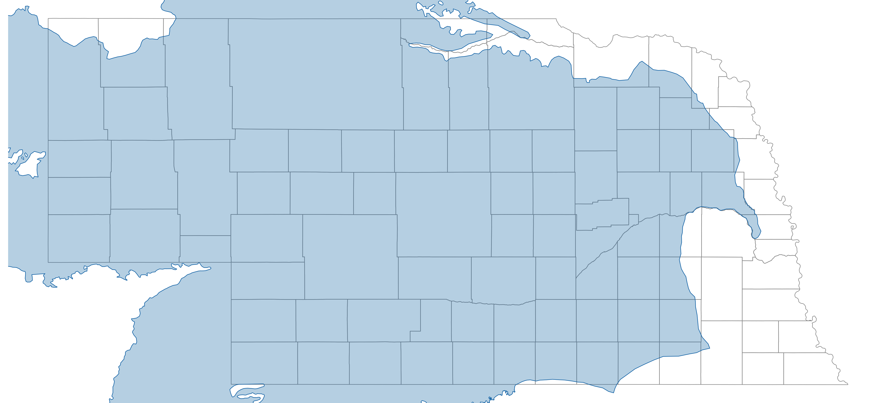

Lecture 09-1 (vector basics) handled one layer at a time. Research questions usually involve two: which counties lie over an aquifer, which wells are within 2 km of a river, how much of a railroad runs through a county. An AI assistant can write the code for each of these in one line. What it cannot do is:
Those are your job. So today is about:
sf, tidyverse and here packages if you have not already.here::here() (lecture 03-1).A spatial relation (also called a topological relation) is a question about where two features sit relative to each other, with a yes or no answer: do they share any point? Is one entirely inside the other? Are they within 1 km of each other?
The same pair of shapes can pass one test and fail another. That is the whole difficulty: an everyday phrase such as “the counties over the aquifer” does not say which test it means.

Shape 1 is inside the square, 2 crosses its edge, 3 shares part of its edge from outside, 4 is outside but close, 5 is far away.
| shape | intersects | within | touches | within 1 unit |
|---|---|---|---|---|
| 1 | yes | yes | no | yes |
| 2 | yes | no | no | yes |
| 3 | yes | no | yes | yes |
| 4 | no | no | no | yes |
| 5 | no | no | no | no |
| Test | Means | sf function |
|---|---|---|
| intersects | the two share at least one point, including a shared edge | st_intersects() |
| within | the first is entirely inside the second | st_within() |
| touches | they share edge points but no area | st_touches() |
| within a distance | some part of one is no farther than the distance from the other | st_is_within_distance() |
Notice shape 3: it passes “intersects” without overlapping the square at all, because sharing an edge counts as sharing a point.
Every operation in this lecture uses a relation in one of three ways, or makes a buffer first:
| Operation | What you get | Shapes changed? | Example question |
|---|---|---|---|
| Test | for each feature of A, which features of B pass | no | how many railroads cross each county? |
| Keep (spatial subsetting) | the features of A that pass, whole | no | which counties lie over the aquifer? |
| Cut (clipping) | only the parts of A’s shapes that lie inside B | yes | how many km of railroad lie inside the county? |
| Buffer | a new polygon covering everything within a distance of a feature | new shape | which wells are within 2 km of the river? |
Note
Keeping and cutting are easy to confuse. Keeping a railroad that crosses a county keeps the whole railroad, including the part outside. Only cutting gives you the part inside.
The next lecture, 09-5, uses relations to join two layers: bring B’s columns onto A’s rows. This lecture covers everything that comes before that.
| Part | What it is | Required? |
|---|---|---|
st_relation |
The test: st_intersects, st_within, … |
Yes |
layer_a |
The layer you ask about: one answer per feature of A | Yes |
layer_b |
The layer you test against | Yes |
options |
dist = for distance tests; sparse = FALSE for a table of TRUE and FALSE |
Only dist for distance tests |
The order matters. st_within(a, b) asks “is each A inside a B?”; st_within(b, a) asks the opposite question.
| Function | Passes when | Extra input |
|---|---|---|
st_intersects(a, b) |
any shared point | |
st_within(a, b) |
a entirely inside b | |
st_contains(a, b) |
b entirely inside a (the reverse of within) | |
st_touches(a, b) |
shared edge, no shared area | |
st_is_within_distance(a, b, dist) |
no farther apart than dist |
dist, required |
st_nearest_feature(a, b) |
for each a, the single closest b |
st_nearest_feature() is different from the others: it always returns exactly one feature of B for each feature of A, however far away that feature is.
The result has one entry per feature of A, listing which features of B passed, by row number:
Sparse geometry binary predicate list of length 5, where the predicate
was `intersects'
1: 1
2: 1
3: 1
4: (empty)
5: (empty)Shapes 1 to 3 pass (row 1 of square); 4 and 5 list nothing, shown as (empty). AI-written code usually turns this into a count per feature with lengths():
A count of 0 means “no match” and a count above 1 means “several matches”. Those two numbers are the start of most checks in this lecture.
| Part | What it is | Required? |
|---|---|---|
kept <- |
The new layer: the features of A that passed, each whole | Needed to keep the result |
layer_a |
The layer you keep features from | Yes |
layer_b |
The layer you test against | Yes |
.predicate = |
The relation | No; the default is intersects |
Nothing about layer_b is added to the result. Only which rows of A survive changes.
The same operation, written three ways:
st_filter(counties, aquifer, .predicate = st_within)counties[aquifer, , op = st_within]: square brackets, as when choosing rows by number, with a layer in place of the numbersfilter(counties, lengths(st_within(counties, aquifer)) > 0): test, count, keep counts above zeroA fourth keeps every row and adds a column saying whether it passed (a flag):
The High Plains aquifer (an underground water reservoir) lies under most of Nebraska. Keep the counties that lie over it:

84 of the 93 counties, in orange; the aquifer’s outline in blue. No .predicate was given, so this is “intersects”: any part of the county over the aquifer.
These functions return new shapes, not a selection of old ones:
| Function | Returns | Second input |
|---|---|---|
st_intersection(a, b) |
the parts of A inside B, with B’s columns attached | a layer |
st_difference(a, b) |
the parts of A outside B | a layer |
st_crop(a, b) |
the parts of A inside the rectangle around B (its bounding box) | a layer or a box |
st_buffer(a, dist) |
a polygon around each feature of A, dist wide |
a distance, in the units of the CRS |
st_union(a) |
all of A’s shapes merged into one | none |
st_crop() is fast, which is why AI code uses it, but it cuts to the bounding box (the smallest rectangle around B), not to B’s outline:

The aquifer’s rectangle covers almost all of Nebraska, so cropping kept 91 of the 93 counties, most of them unchanged. For the parts inside the aquifer itself, the function is st_intersection().
rail_lan <- st_filter(railroads, lancaster) # keep: whole segments
rail_cut <- st_intersection(rail_lan, st_geometry(lancaster)) # cut: parts inside
units::set_units(c(kept = sum(st_length(rail_lan)), cut = sum(st_length(rail_cut))), km)Units: [km]
kept cut
294.5544 282.1574 Keeping gives 294.6 km of railroad, because every segment that crosses the county line is kept whole. Cutting gives 282.2 km, the length actually inside the county. st_geometry(lancaster) passes only the county’s shape, so no county columns are attached.
sf stops with an error (lecture 09-1). Good: you know.Which counties intersect Lancaster County?
[1] 9[1] 89 counties: Lancaster itself, and its 8 neighbours, which share only a boundary line with it. Counties in a state share boundaries, so “intersects” between two layers of neighbouring polygons picks up every neighbour. If you meant “overlap by some area”, that is not what you got, and nothing warns you.
[1] 84[1] 5484 against 54: 30 counties differ between “over the aquifer” read one way and read the other. Neither number is wrong; one of them does not answer your question. The AI picks intersects unless told, because it is the default.
A 10 km buffer around Lancaster County, written as dist = 10000, in three CRSs:
area_km2 <- function(x) round(as.numeric(units::set_units(st_area(x), km^2)))
c(
longitude_latitude = area_km2(st_buffer(lancaster, 10000)),
utm_metres = area_km2(st_buffer(st_transform(lancaster, 26914), 10000)),
state_plane_feet = area_km2(st_buffer(st_transform(lancaster, 26852), 10000))
)longitude_latitude utm_metres state_plane_feet
4479 4423 2804 The county alone is 2189 km². In longitude and latitude, sf reads the distance as metres. In UTM zone 14N (EPSG 26914), the units are metres too. In the Nebraska state plane CRS in US feet (EPSG 26852), 10,000 is 10,000 feet, about 3 km, so the buffer is much smaller. No error in any of the three.
A polygon whose boundary crosses itself (a “bow tie”) is invalid. sf still computes with it:
[1] FALSE[1] 0Two triangles of area 1 each, and an area of 0. Files drawn by hand or converted between formats sometimes contain such shapes. st_is_valid() finds them and st_make_valid() repairs most of them; the check is to count invalid shapes before combining layers.
The same way of working as on the slide of this name in lecture 02-1: you ask, the AI writes into your .qmd with one plain-English sentence above each chunk, you render, and you judge the HTML. With spatial data the last step matters more than usual: a map in the HTML shows at a glance whether the features kept are the ones you meant, which no chat reply can. Every request for code ends with the closing instructions of lecture 03-1, under Recommended requests.
You cannot say which features you expect to keep without seeing where the two layers lie relative to each other. Ask for the four checks of lecture 09-1 on each layer, and one more thing: a map of the two layers drawn together.

From this map, before any code: the aquifer covers most of the state but not the east, and its outline is not a rectangle, so cropping to it would not do.
From the map, a student might write: “Roughly 80 to 90 counties have some part over the aquifer; roughly 50 to 60 are entirely over it; the counties in the far east have no part over it.” Rough is fine. The point is to have something to compare against before the AI’s number arrives.
The AI knows every function. Your request supplies what it cannot know:
The AI has to guess the files, their CRSs, and the meaning of “over”. It will usually write st_intersects(), the default, which includes every county with a sliver over the aquifer, and print nothing that tells you so.
In my R project, data/counties.gpkg (93 counties) and data/aquifer.gpkg
(the aquifer outline) are both in EPSG 4269. I want the counties that lie
ENTIRELY over the aquifer, kept whole, in a layer called counties_over.
I expect between 50 and 60.
Then check: the CRS of both layers, the number of counties kept, the
number of invalid shapes in each layer (I expect 0), and draw a map of
all counties with the kept ones filled and the aquifer outline on top.
Put the code in my Quarto document analysis/aquifer.qmd, under the
heading "Counties over the aquifer", as R code chunks. Above each chunk,
write one plain-English sentence saying what it does and why. Build every
path with here::here(); no setwd(), no absolute paths. Print each check
on its own line as "name of check: expected X, got Y". Render the
document to HTML.In the rendered HTML, a sentence, then the chunk it describes.
Read the two layers.
Keep the counties that lie entirely inside the aquifer outline.
Print the checks.
CRS of counties: expected EPSG 4269, got EPSG 4269
CRS of aquifer: expected EPSG 4269, got EPSG 4269
counties kept: expected 50 to 60, got 54
invalid shapes in counties: expected 0, got 0
invalid shapes in aquifer: expected 0, got 0Every line matches. The map, which the HTML also shows, is the one on the “Keeping the features that pass” slide with fewer counties filled.
The four checks of lecture 09-1 (CRS, number of features, bounding box, a map) still apply to each layer. Combining two layers adds these:
| Ask the AI to print | Catches | What only you can supply | |
|---|---|---|---|
| 1 | features before and after keeping | the wrong relation (too many or too few kept) | a rough count from the map |
| 2 | features with no match, and with more than one | points or shapes in the wrong place, neighbours picked up by a shared edge | how many should match |
| 3 | invalid shapes in each layer | wrong areas and failed tests from broken polygons | (0 is always right) |
| 4 | a map of the result over the other layer | anything the counts did not show | what the place looks like |
| 5 | a total that must be preserved | parts lost or counted twice when cutting | the total, from another source |
Cutting is the step where length or area can quietly go missing or be counted twice. A total that should not change is the check:
The aquifer cut at county boundaries, with its total checked:
pieces <- st_intersection(counties, st_union(aquifer))
in_state <- st_intersection(st_union(aquifer), st_union(counties))
km2 <- function(x) round(sum(as.numeric(units::set_units(st_area(x), km^2))))
cat(
paste("pieces: expected", nrow(st_filter(counties, aquifer)), "(one per county over the aquifer), got", nrow(pieces)),
paste("area of pieces: expected", km2(in_state), "km2, got", km2(pieces)),
paste("invalid pieces: expected 0, got", sum(!st_is_valid(pieces))),
sep = "\n"
)pieces: expected 84 (one per county over the aquifer), got 84
area of pieces: expected 167219 km2, got 167219
invalid pieces: expected 0, got 0All three pass: one piece per county that intersects the aquifer, and the pieces add up to the aquifer’s area inside the state. st_union(aquifer) merges the aquifer’s two polygons first, so a county touching both polygons gives one piece, not two, and no area is cut twice.
The checks above apply to any two layers. Checks from what you know about this place are stronger, and no AI will think of them.
You know Lancaster County (Lincoln) is not over the High Plains aquifer and Hall County (Grand Island) is. Ask for those two by name: if either comes out wrong, so does the rest.
A feature can pass “intersects” with a sliver. For a study, that sliver may not count. Example: the Iowa counties that intersect watershed 07060004 (a hydrologic unit, the area draining to one river), and the share of each county’s area that lies inside the watershed:
Using the layers ia_counties and watersheds, both in EPSG 4269, keep
the counties that intersect watershed 07060004, and for each, compute
the share of its area inside the watershed, in a CRS in metres. Print
the shares, smallest first, with the county codes.
Put the code in my Quarto document analysis/analysis.qmd, under the
heading "Checks", as R code chunks. Above each chunk, write one
plain-English sentence saying what it does and why. Build every path
with here::here(); no setwd(), no absolute paths. Print each check on
its own line as "name of check: expected X, got Y". Render the document
to HTML.The AI’s code, and what it printed:
ws <- filter(watersheds, HUC_CODE == "07060004") |> st_transform(26915)
ia_kept <- st_filter(st_transform(ia_counties, 26915), ws)
inside <- st_intersection(ia_kept, st_geometry(ws))
share <- tibble(
countyfp = inside$countyfp,
share = round(as.numeric(st_area(inside)) / as.numeric(st_area(ia_kept[match(inside$countyfp, ia_kept$countyfp), ])), 3)
) |> arrange(share)
share# A tibble: 8 × 2
countyfp share
<chr> <dbl>
1 005 0.002
2 061 0.019
3 055 0.089
4 037 0.241
5 191 0.293
6 089 0.504
7 065 0.687
8 043 0.7178 counties intersect the watershed, but 2 of them have less than 5% of their area inside it. Whether those belong in a study of the watershed is a decision for you; the list is what lets you make it, and defend it.
A student asked an AI to “find how many km of railroad run within 5 km of Lincoln”, and got this:
A. What does each line do?
B. EPSG 26852 is NAD83 / Nebraska in US feet. How wide is the zone really?
C. Which line keeps whole segments when the question asks for the length inside the zone?
D. Rewrite the request so the AI could not make these mistakes.
A. Makes a point for Lincoln in longitude and latitude; transforms it to the state plane CRS; draws a zone around it; keeps railroad segments that intersect the zone; adds up their lengths.
B. 5,000 feet, about 1.5 km, not 5 km. No error, because 5,000 is a valid distance in feet.
C. Line 4. st_filter() keeps every segment that touches the zone, whole. st_intersection() would cut them at the edge of the zone.
D. Say “within 5 km”, ask for the buffer to be made in a CRS in metres and for its radius to be printed in km, ask for the railroads to be cut at the zone’s edge, and ask for a map of the zone with the cut railroads.
Copy one, then replace every <...> with what you found by looking at the layers. Every request for code ends with the closing instructions.
The lines that end every request for code. Replace the two blanks; leave “expected X, got Y” as it is, because it tells the AI how to print each check:
Put the code in my Quarto document <path to your .qmd>, under the
heading "<heading>", as R code chunks. Above each chunk, write one
plain-English sentence saying what it does and why. Build every path
with here::here(); no setwd(), no absolute paths. Print each check on
its own line as "name of check: expected X, got Y". Render the document
to HTML.A chat assistant cannot render: paste its chunks into your .qmd and render it yourself. An agent in your editor or terminal can do every step.
In my R project, <path to the first layer> and <path to the second
layer> are vector layers. Read both. For each, print the CRS, the number
of features, the geometry type, the bounding box and the number of
invalid shapes. Then draw one map with both layers together, the second
layer's outline on top.
Put the code in my Quarto document <path to your .qmd>, under the
heading "<heading>", as R code chunks. Above each chunk, write one
plain-English sentence saying what it does and why. Build every path
with here::here(); no setwd(), no absolute paths. Print each check on
its own line as "name of check: expected X, got Y". Render the document
to HTML.Using the layers <layer you keep features from> and <layer you test
against>, both in EPSG <code>, keep the features of the first that
<the relation in plain words: have any part inside / lie entirely inside
/ share a boundary with> the second, whole, in a layer called <name>.
I expect about <number> of <number> features to be kept.
Then check: the number of features before and after, the number of
invalid shapes in each layer, and draw a map of all features with the
kept ones filled and the second layer's outline on top. Also print
<a feature you know the answer for> and whether it was kept.
Put the code in my Quarto document <path to your .qmd>, under the
heading "<heading>", as R code chunks. Above each chunk, write one
plain-English sentence saying what it does and why. Build every path
with here::here(); no setwd(), no absolute paths. Print each check on
its own line as "name of check: expected X, got Y". Render the document
to HTML.Using the layers <layer of features> and <layer of places>, find the
features within <distance> <km or m> of any place. Do the distance work
in a CRS in metres, <EPSG code, or "suggest one for my area">, and print
the CRS and its units. Keep the features whole, in a layer called <name>.
I expect about <number>.
Then check: the number of features before and after, and draw a map of
the zone around the places, the kept features, and the others in grey.
Put the code in my Quarto document <path to your .qmd>, under the
heading "<heading>", as R code chunks. Above each chunk, write one
plain-English sentence saying what it does and why. Build every path
with here::here(); no setwd(), no absolute paths. Print each check on
its own line as "name of check: expected X, got Y". Render the document
to HTML.Cut <layer to cut> at the boundaries of <layer to cut by>, keeping the
columns of both, in a layer called <name>. Then compute the <length in
km or area in km2> of each piece, in a CRS in metres.
Then check: the number of pieces, the number of invalid pieces, and
that the pieces add up to <the total you expect, and where it comes
from>. Draw a map of the pieces.
Put the code in my Quarto document <path to your .qmd>, under the
heading "<heading>", as R code chunks. Above each chunk, write one
plain-English sentence saying what it does and why. Build every path
with here::here(); no setwd(), no absolute paths. Print each check on
its own line as "name of check: expected X, got Y". Render the document
to HTML.Explain this R code to me. For each line, write one plain-English
sentence. Then list:
1. which spatial relation each line uses, and whether it keeps whole
features or cuts them
2. every distance, and the units it is in given the CRS at that line
3. any line that could give a wrong result without an error, and what
check would reveal it
<paste the code here>| You need to understand | The AI can write |
|---|---|
| Which relation your question means: intersects, within, touches, within a distance | st_intersects(), st_within(), st_filter(.predicate = ) |
| That “intersects” includes features that only share a boundary | |
| Whether you want whole features or the parts inside | st_filter() or st_intersection() |
| What distance in what units, and which CRS gives metres | st_transform(), st_buffer() |
| What a correct result looks like: rough counts, a known feature, a total | The checking code and the map |
Every time you combine two layers: look at a map of both first, and write down which features you expect and roughly how many. Say the relation in plain words and the distance with units. Ask for counts before and after, features with no match, invalid shapes, a preserved total when cutting, and a map of the result. Render, and judge the HTML against what you wrote down.